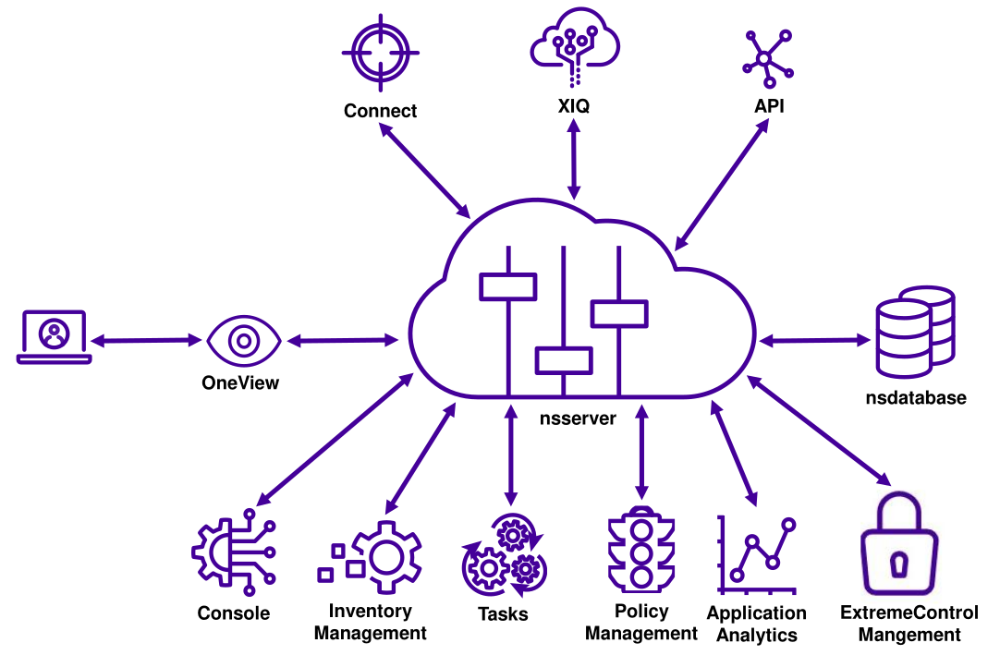
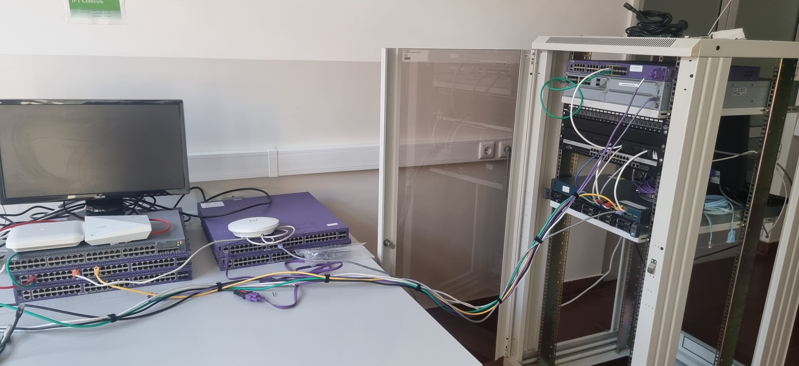
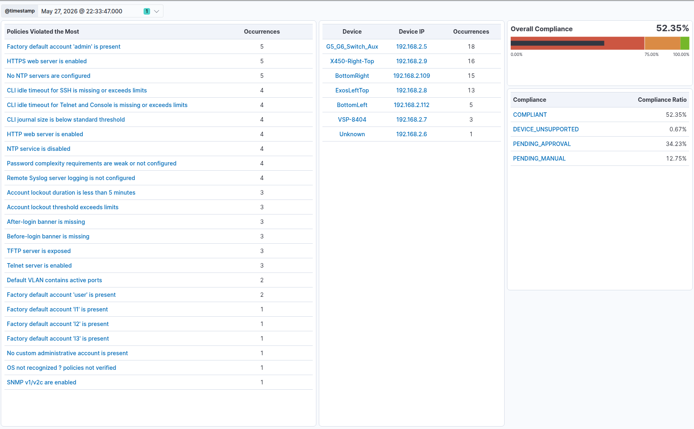
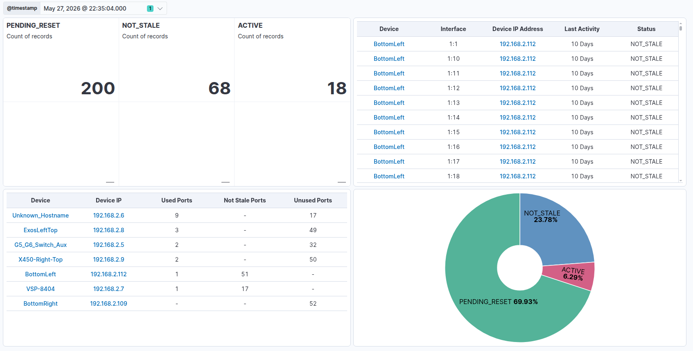

Bridging the State Extraction Gap
Overcoming API fragmentation through adaptive network automation.
Project Deadlines & Complexity

Decreasing delivery timeframes intersect with continuous increases in technical complexity. Technical shifts (Robotic Process Automation, Infrastructure as Code, LLMs), economic demands (faster time-to-market), and human factors (human error as a leading cause of downtime) strictly drive the requirement to optimize execution time via automation.
Automation Paradigms
Automation applies technology to achieve outcomes with minimal human input. Offloading repetitive tasks to a deterministic system increases precision, ensures consistency, and reduces human error.
Implicit Automation
Autonomous behavior implemented directly by native network protocols without external intervention.
Explicit Automation
Management-plane operations executed through external control logic. Utilizes imperative instructions to invoke configuration, monitoring, or remediation tasks on devices.
Extreme Management Center (XIQ-SE)
The core execution engine of the project. Operates as an on-premise Network Management System handling device onboarding, providing a centralized management-plane, and driving the integrated workflow engine.

Source: XIQ-SE - Installation & Configuration Student Guide, 2025 Extreme Networks
Objectives
Programmatic Workflows
Abstract manual multi-vendor network administration into unified, automated execution pipelines.
External Visualization
Export localized execution telemetry to an Elastic Stack for long-term historical trend analysis.
Methodology
Deploy a multi-protocol fallback architecture (NBI -> RESTCONF -> JSON-RPC -> CLI) to circumvent API fragmentation across heterogeneous hardware baselines.
Laboratory Infrastructure
To expose specific API and firmware constraints, the framework was deployed against a physical laboratory topology rather than a simulated environment.
- Scale: 7 physical switches operating across 286 active interfaces.
- Multi-Vendor Environment: Integrated ExtremeXOS, VOSS platforms, and a Cisco Catalyst running Cisco IOS to evaluate architectural extensibility against non-native API structures across different OSes.
- Firmware Lifecycle: Exposed state extraction limits by mixing hardware lifecycles, specifically contrasting legacy hardware (X460-G1 capped to EXOS 16) with modern platforms (X450-G2 running latest versions).

Physical topology deployed for operational validation.
The Multi-Protocol Waterfall Architecture
The core engineering solution to API fragmentation. The script evaluates devices by cascading through protocols, prioritizing state extraction success over protocol strictness. Click on the steps to view extraction logic.
Developed Workflows
The architecture abstracts manual operations into a series of functional Python workflows. These scripts execute locally on the XIQ-SE engine, applying the waterfall methodology to ensure reliable task completion across the fabric.
Unused Ports
Identifies and dynamically disables stale access ports, eliminating residual Layer 2 attack surfaces without operator intervention.
WLAN Topology Mapping
Maps physical Wireless Local Area Network structures. Lists the WLAN APs deployed throughout the network and their respective uplinks.
Security Compliance
Evaluates the infrastructure against predefined policy matrices and enforces compliance via OS-specific correction commands.
SFP Discovery
Extracts optical Rx/Tx power, voltage, and temperature metrics. Maps physical transceiver connection points across the fabric and bypasses API limitations to monitor hardware degradation.
Legacy VSP Switches
Enforces configuration consistency and executes targeted state extraction workflows specifically tailored for legacy Avaya/Extreme VSP hardware platforms.
EntraID User Validation
Queries Microsoft EntraID via the Graph API. Retrieves definitive user identity and authorization context for stateless network access processing.
Intune Device Compliance Check
Queries Microsoft Intune to determine real-time endpoint health. Provides the definitive compliance state required to authorize or quarantine network access.
External Visualization (Elastic Stack)
Execution telemetry is offloaded to Elastic Stack. This provides complex data visualization, time-series aggregation, and network-wide visibility long-term reporting.
Kibana: Security Compliance Dashboard

Baseline compliance doubled automatically. Remaining non-compliant fractions represent policies flagged for manual configuration.
Kibana: Unused Ports Dashboard

Cloud Identity & NAC Zero-Caching PoC
Current NAC implementations incur operational latency through persistent database caching. Workflows were developed utilizing the Microsoft Graph API to extract user identities from EntraID and compliance policies from Intune, establishing a stateless enforcement pipeline.
Acts as LDAP compatibility middleware bridging cloud identity with legacy 802.1X.
- Proxies LDAPS to Entra Domain Services.
- NAC provisions restricted 'Evaluating' policy upon initial Accept.
- Graph API queried in near real-time. CoA transitions to production upon compliance.
- Inject access policies in NAC via NBI.
SSO integration pushing authorization states directly into NAC via the NBI.
- Captive portal intercepts unauthenticated devices.
- Forces native EntraID OAuth/SAML authentication.
- Middleware verifies Intune status via Graph API and issues CoA.
- Inject access policies in NAC via NBI.
Certificate-based validation utilizing an external proxy RADIUS service.
- Endpoint enrolls via SCEP, obtaining X.509 with Entra Device ID.
- NAC acts as stateless RADIUS proxy.
- Remote service extracts Device ID, queries Intune, returns Accept/Reject.
- Inject access policies in NAC via NBI.
Conclusion
Enterprise networks remain fragmented despite the push toward standardized APIs. This project addressed that reality by implementing a multi-protocol automation framework that achieved state extraction across all evaluated devices, automated operational and security workflows, and extended XIQ-SE with external observability capabilities. The results demonstrate that effective network automation depends not on a single interface, but on adaptive architectures capable of operating across heterogeneous environments.